My pronouns are She/Her/Hers |
Automation Test Developer Intern at Nagarro |
TechTogether Boston Organizer |
Director of Prospective Sponsors @ queer_hack |
Harvard WECode'21 Technology Fellow |
Computer Science @ Mount Holyoke College '22 |
Looking for 2022 New Grad opportunities :)
Tracovid
is a cross-platform mobile application
created using Dart and Flutter in Android Studio
that strives to simplify the lives of
Mount Holyoke College students during the ongoing COVID-19 pandemic.
By organizing all of the on-campus resources spread out over different websites and portals
into one easy-to-use-and-navigate platform, we made it more accessible.
Over the course of this project, I managed a team of three of us
in project planning and implementation, and led weekly stand up meetings,
all the while using Agile methodologies.
I also conducted user testing of app the once we had a minimum viable product
to get user feedback and make necessary changes as they came up.
Asteroids
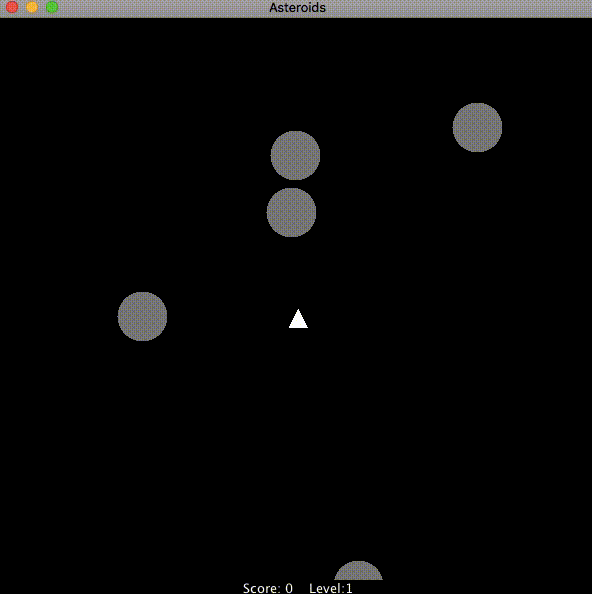
Asteroids is a executable remake of the classic
multi-directional shooter arcade game of the same name.
Featuring levels progressively getting harder, screen wraparound and hyperspace jumps!
Instagram Filters
Created and published filters to instagram using
Spark AR Studio, Adobe Illustrator, Autodesk Sketchbook and GIMP.
Click on a filter to try it out on the Instagram app!
Explore Holyoke
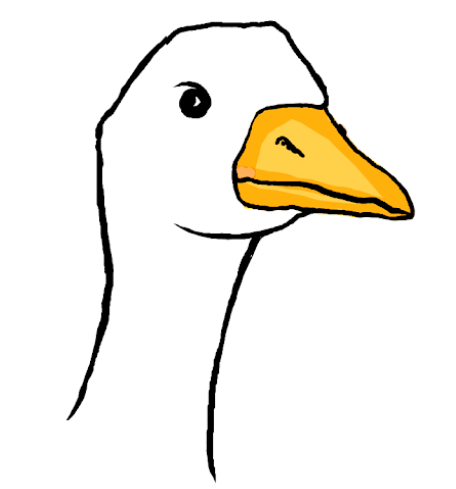
Google Prize - HackHolyoke 2019
Collaborated with three team members to devise and implement
Explore Holyoke
- a game using Unity and C#
to help prospective students learn more about our college via its ghost stories and folklore.
Manifest COVID
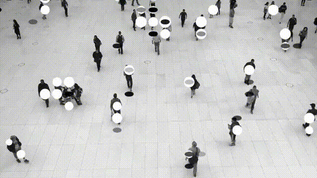
Mercury Track: Best Safety & Security Hack - Spectra 4.0
Manifest COVID
visualizes potential presence of airborne virus particles
using GCP to analyze video information and p5.js for animation.
Synesthesiacs
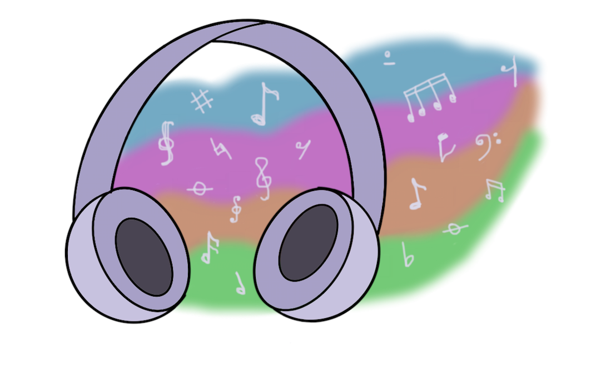
Synesthesiacs
is a website meant to mimic the neurological phenomenon of synesthesia,
converting music into art. Created with a team for HobbyHacks 2020.
Automation Test Developer Intern
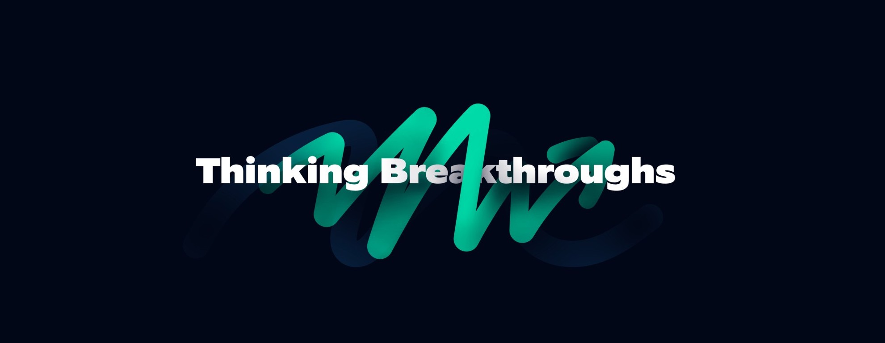
(June 2021 - Present)
Utilizing Robot Framework to create automation tests as part of a cross-functional scrum team at
Nagarro.
Organizer - Sponsorship
(May 2021 - Present)
Building and maintaining relationships with
TechTogether's
corporate partners to secure funding for TechTogether Boston.
Developing sales, strategy, and project management skills-sets to
form personal relationships with representatives at partnering companies.
Director of Prospective Sponsors
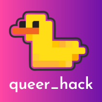
(May 2021 - Present)
Cultivating and fostering relationships with prospective sponsors for
queer_hack -
a virtual beginner-friendly hackathon for LGBTQ+ students.
Technology Fellow
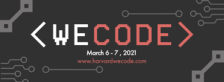
(January 2020 - March 2021)
Fellow Leadership Award for demonstrating outstanding leadership as a Harvard WECode Technology Fellow
Selected as one of 65 Technology Fellows for
Harvard WECode: Women Engineers Code Conference 2021.
Publicized WECode in three core areas - personal outreach, digital communities and local outreach.
Participated in workshops and sessions on professional development, digital media and peer engagement.
Cultivated and fostered community among women and non-binary technologists passionate about technology and eager to change the world.
Project Trainee, Technology
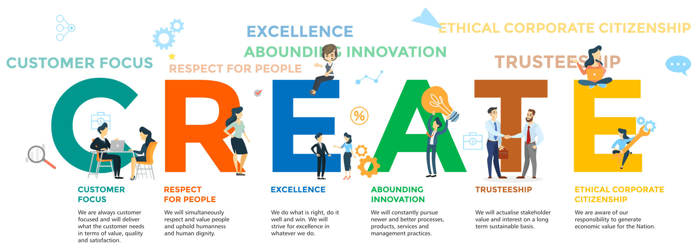
(July 2020 - August 2020)
Spearheaded research on the evolution of SAP ERP Software used by
ITC Infotech.
Work-Study Student
(August 2019 - Present)
Computer Science Lab Teaching Assitant
Assisted laboratory instruction for a group of 20 students in Introductory Computer Science – Artificial Intelligence
Gave effective feedback, answered questions and helped students problem solve during lab hours
Statistics Teaching Assitant and Grader
Acted as a liaison between the professors and students
Troubleshot and gave constructive feedback to students enrolled in Introductory Statistics courses with R programming, thereby increasing their confidence in statistics and coding
Held office hours and graded weekly assignments in RStudio for around 15 students
Computer Science Peer Mentor
Mentored students in Introductory Computer Science – Humanities Computing and Artificial Intelligence
Was a resource for mentees and kept track of their progress through scheduled meetings, encouraging them to enroll in further computer science courses
Performed code reviews for mentees, giving effective feedback including good coding habits as well as possible areas of improvement
Maintained interaction logs for each mentee
International Admission Outreach Volunteer
Reaching out to international students who have been accepted to Mount Holyoke
Engaging with them and being a resource for them as well as maintaining open lines of communication
Maintaining confidentiality
Co-Founder and President
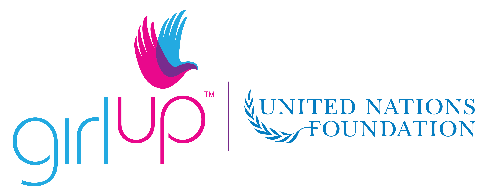
(January 2019 - Present)
Co-Founder and President of
GirlUpMHC -
a chapter organization of the United Nations
Girl Up
campaign for gender equity and empowerment at Mount Holyoke College.
Secretary, Soprano
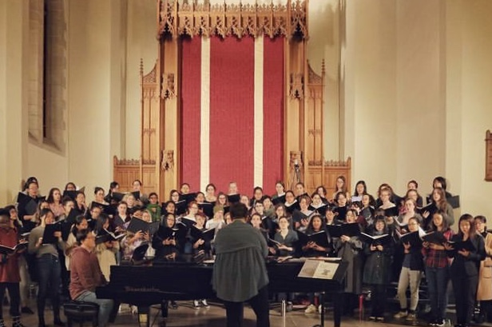
(August 2018 - Present)
Soprano I/II in
Chorale,
an auditioned choral ensemble at Mount Holyoke College.
As part of the board, I organized choir events such as
Vespers and The Friends and Family Concert.
Hackathon Mentor
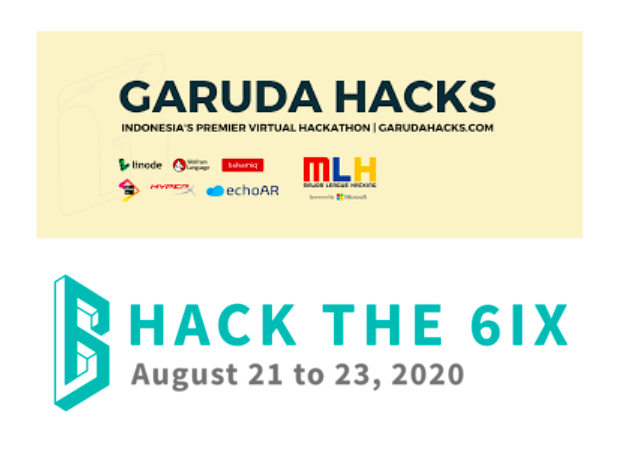
(July 2020 - August 2020)
Tech and Non-Tech mentor for participants of hackathons such as
BridgeHacks,
Garuda Hacks, and
Hack The 6ix.
Mentored teams and individual hackers on project ideas and implementation, using Python, Java,
HTML/CSS, the Bootstrap framework, JavaScript and the Unity game engine via Discord and Slack.
Student Leader
(April 2017 - March 2018)
Student Council Member
Elected to the Student Council as Media and Communication Liasion
Attended regular meetings and planned intra-school events
Media and Communication Leader
Wrote and edited articles for the school website
Editor for the school magazine The Link
Student Leader
(August 2017)
Invited to attend and represent my school and country at
National Student Leadership Conference (NSLC)
at UC Berkeley for Media and Journalism.
Put in 73 hours including leadership seminars and workshops.
Pre-College Program Student
(August 2017)
Accepted to Harvard's not-for-credit
Pre-College Summer Program
for Young Adult Fiction where I lived and studied alongside peers from all over the world.